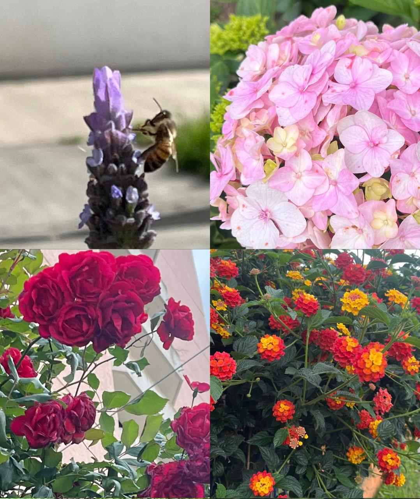
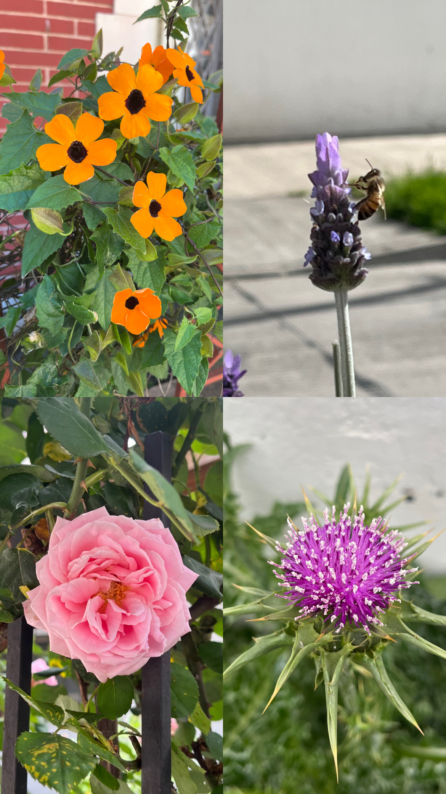
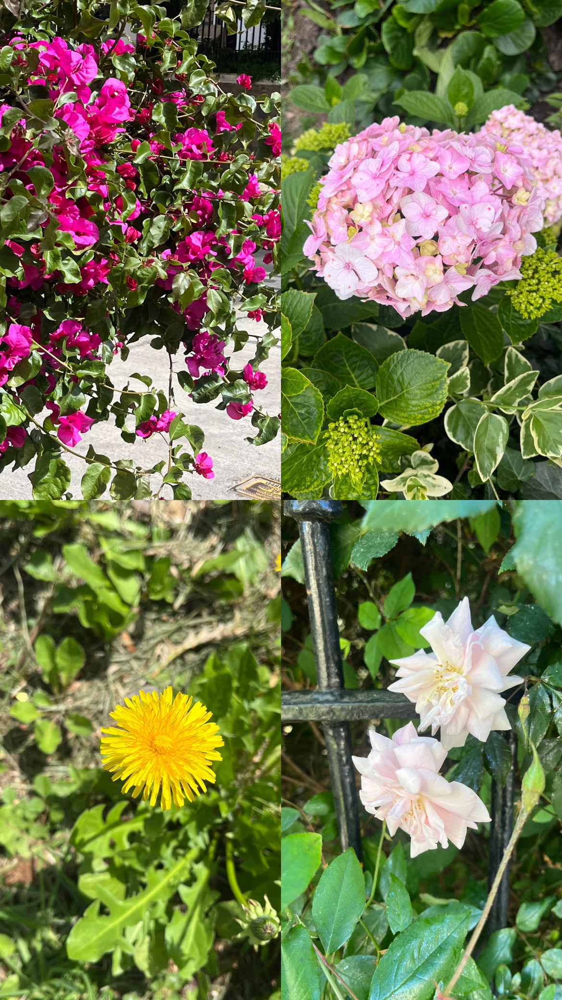

Diseño · Código · Naturaleza
My own
My own
digital garden.
Este portafolio reúne proyectos de diseño, experimentación visual y programación en P5.js. Un espacio para explorar formas, movimientos e interacciones a través del código.

Explora mis sketches
Proyectos
Desliza para explorar →



A mi parecer
La belleza esta en la observsción de lo que no se ve a simple vista.
